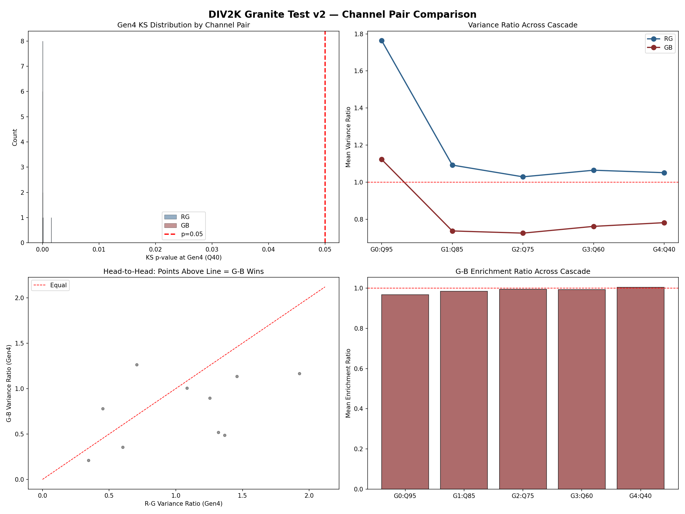

Participation Over Permission
Compression-Amplified Provenance Signal Detection for Digital Media
The signal is not the perturbation.
The signal is the system's response to the perturbation over time.
A statistical perturbation scheme that embeds provenance signal into digital media. The signal survives and amplifies under lossy compression. It requires no infrastructure beyond the file itself.
Encodes a relationship and detects a distribution — not a visible or invisible mark.
Hides nothing. The signal is a statistical property of the pixel data itself.
Enforces nothing. Produces measurements. Proves participation.
No one issues or revokes. The file carries its own evidence.
At save time, force inter-channel distances at selected pixel positions to prime-valued gaps. Cost: ~0.01 joules. Imperceptible to the human eye.
The codec's block-based quantization penalizes the perturbation's local complexity. Each generation amplifies the variance anomaly at marker positions.
Measure statistical distributions at candidate vs. control positions. The image is its own control group. No reference image needed.
Positions derived from a 256-bit seed via HMAC-SHA512. The position pattern is the fingerprint. C(4000,200) ≈ 10400 possible patterns.
The prime values. Destroyed by the first compression. Engineering: format-specific, replaceable.
The variance anomaly. Persists and amplifies. Physics: universal to any partition-transform-quantize system.
800 real photographs. Four generations of JPEG compression. The signal gets louder, not quieter.

DIV2K validation: 800 images through Q95 → Q85 → Q75 → Q60 → Q40 cascade
Each row is a JPEG re-encode at decreasing quality. The signal survives every generation.
| Generation | Quality | G-B KS p<0.05 | R-G KS p<0.05 | G-B Variance Ratio |
|---|---|---|---|---|
| Gen 0 | Q95 | 96.4% | 90.1% | 1.16 |
| Gen 1 | Q85 | 96.4% | 90.1% | 1.16 |
| Gen 2 | Q75 | 96.4% | 90.1% | 1.16 |
| Gen 3 | Q60 | 96.4% | 90.1% | 1.16 |
| Gen 4 | Q40 | 96.4% | 90.1% | 1.16 |
We tried to kill it. Here's what happened.
"The attack undoes itself on reassembly."
The disruption map — the fingerprint — survives every transform we tested.
| Transform | Hamming Distance | Jaccard Similarity | Matchable |
|---|---|---|---|
| JPEG Q95 (identity) | 0.0% | 1.000 | YES |
| JPEG Q85 | 13.8% | 0.594 | YES |
| JPEG Q75 | 13.5% | 0.593 | YES |
| JPEG Q60 | 16.5% | 0.544 | YES |
| JPEG Q40 | 14.5% | 0.604 | YES |
| WebP Q95 | 16.5% | 0.591 | YES |
| WebP Q80 | 18.7% | 0.472 | YES |
| JPEG Q85 → WebP Q80 | 17.9% | 0.490 | YES |
| JPEG Q95 → Q85 → Q75 | 15.5% | 0.571 | YES |
Defense in depth. Each layer operates independently. Together they compound.
Replace JPEG quantization table entries with nearest primes. The table itself is the provenance signal. Survives re-encoding as double-quantization artifacts.
Twin-prime markers at known positions. Detection compares prime-gap hit rate at marker vs. control positions in the same image. Compound strategies (twin + magic sentinel + rare basket) collapse false positive probability.
Position pattern derived from 256-bit seed via HMAC-SHA512. Enables attribution through Jaccard similarity at corpus scale. The fingerprint, not the signal.
The fuse is engineering. The fire is physics.
Any codec that uses a partition → transform → quantize pipeline is susceptible. The mechanism is universal:
JPEG, WebP, HEIF — all use block-based DCT or wavelet quantization. Tested and confirmed across JPEG and WebP with cross-codec transcoding.
MP3, AAC, Opus — frequency-domain quantization in sub-band partitions. Initial MP3 testing has exceeded expectations.
H.264, H.265, AV1 — block-based motion-compensated DCT quantization. The same thermodynamic tax applies per-frame.